Academic Projects
Mechanical Engineering
| Experimental Airfoil Design, Build, and Wind Tunnel Validation
This laboratory project centered on the end-to-end process of designing, fabricating, and experimentally validating an airfoil-inspired vehicle body to minimize aerodynamic drag. The work required a rigorous, systems-engineering approach, integrating computational modeling, hands-on build, and real-time data acquisition in a laboratory environment. The experience closely mirrors the multidisciplinary, fast-paced, and safety-critical work performed in advanced aerospace vehicle testing.
| Project Description & Experimental Context
Aerodynamic drag, or air resistance, is a critical factor in aerospace and automotive design, directly impacting fuel efficiency, handling, and performance. The energy required to overcome drag increases with the square of speed, making drag reduction essential for improving fuel efficiency, top speed, and vehicle stability. Our project aimed to create a 3D-printed car model with a volume under 50 cubic inches, designed to minimize drag force in a wind tunnel. Shape constraints required a minimum width and height, and a mounting tap for wind tunnel testing. To optimize the design, we drew inspiration from the NACA 6 series airfoil profiles, known for their low-drag characteristics. Using airfoiltools.com, we imported coordinates into SolidWorks, iteratively refining the model to meet all constraints and maximize aerodynamic efficiency.
We conducted computational fluid dynamics (CFD) simulations in SolidWorks to analyze airflow patterns and identify areas of high drag, iterating on the design to improve performance. The final prototype was selected based on simulation results showing the fastest surrounding airflow velocities and lowest drag. This process introduced me to fluid flow simulation and the practical application of aerodynamic theory to real-world engineering challenges.
For experimental validation, we used the AF1300 subsonic wind tunnel and the Virtual Dynamics Analysis System (VDAS) software. The model was mounted using a custom rear tap, and we collected drag and lift data at three angles of attack (0°, +22° up, and -22° down) and two wind speeds (20 m/s and 35 m/s). This allowed us to study how angle of attack and fluid velocity affect aerodynamic forces. The lift-to-drag ratio, a key efficiency metric, was analyzed for each configuration. At 0°, the streamlined design minimized both lift and drag, while pitching the model up or down increased the lift-to-drag ratio, mimicking the behavior of an aircraft wing.
The experiment focused on pressure forces, with drag measured parallel and lift perpendicular to the flow. By non-dimensionalizing the data (using coefficients of drag and lift), we enabled meaningful comparison across different model scales. This approach is widely used in industry to validate designs with small-scale prototypes before committing to full-scale production, saving time and resources while enabling rapid iteration.
The hands-on process included 3D modeling, rapid prototyping, wind tunnel setup, and real-time data acquisition. We used the VDAS system to record force data, calculate coefficients, and analyze results under controlled conditions. The project deepened my understanding of aerodynamic principles, experimental methods, and the importance of cross-functional teamwork in engineering design and validation.
| Laboratory Process & Technical Skills
The project began with the establishment of clear test criteria and pass/fail requirements for the airfoil prototype, including maximum allowable drag force and strict dimensional/volume constraints. I led the development of a detailed measurement plan, specifying the experimental setup, instrumentation, and data collection protocols. This included the use of pressure sensors, force balances, and high-frequency data acquisition systems to capture real-time aerodynamic performance metrics. Specific pass/fail criteria: Volume should be design within 50 +/- 0.5 cubic inches, the heigh of the vehicle should exceed 1.3 inches and the width should be over 2 inches, the model should have an insert tap on the back of the car with a diameter of 3.7 mm and a depth of 2.5 mm for wind tunnel moutning.
I was responsible for the hands-on build of the prototype, interpreting and modifying CAD models based on NACA 6-series airfoil data, and ensuring the final 3D-printed part met all design intent and safety requirements. During the integration phase, I worked directly with both engineering peers and laboratory technicians to install the model in the AF1300 subsonic wind tunnel, verifying all mechanical and electrical connections, and performing pre-test checkouts of the pressure and sensor systems via the control console.
Throughout the test campaign, I led hazardous operations including pressurized airflow runs, closely monitoring system health and safety interlocks. I developed and executed first-article validation procedures, troubleshooting hardware and instrumentation issues in real time and driving rapid feedback to the team to eliminate repeat errors. My responsibilities included interpreting live sensor data, adjusting test parameters on the fly, and ensuring all results were within established pass/fail criteria.
This project demanded a deep understanding of fluid dynamics, system integration, and the operation of both fluid and electrical subsystems. I gained experience reading and creating fluid and electrical schematics, and developed a strong working knowledge of the ground control systems required for remote operation and instrumentation feedback. The fast-paced, high-pressure environment required me to prioritize tasks, maintain keen attention to detail, and collaborate daily with both engineers and technicians to achieve successful test outcomes.
Key skills developed include: systems engineering, hands-on build and troubleshooting, real-time operations, data acquisition and analysis, safety and test procedure development, and effective cross-functional teamwork. These experiences directly support the technical and operational requirements of advanced aerospace vehicle testing and validation.
.png)
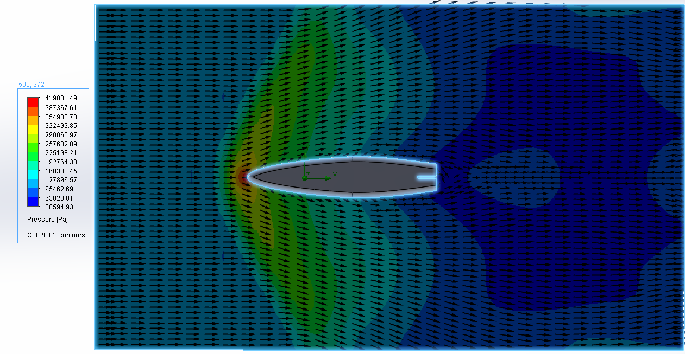
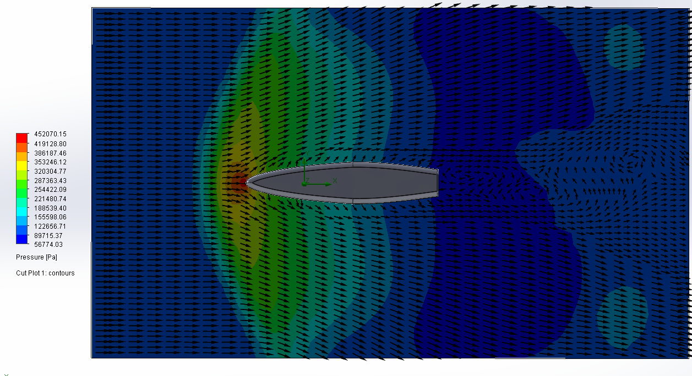
Examples of 0° CFD Simulations Used to Guide Design Iterations

NACA-63A010 Airfoil-Inspired Final Design
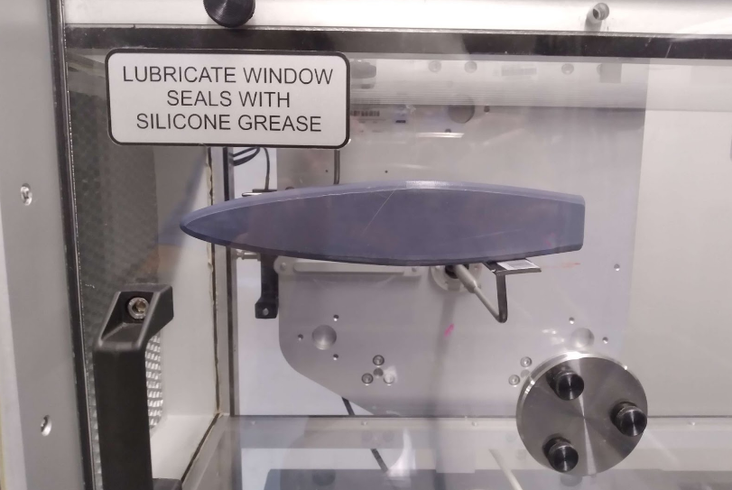
Prototype Installed for Real-Time Wind Tunnel Testing
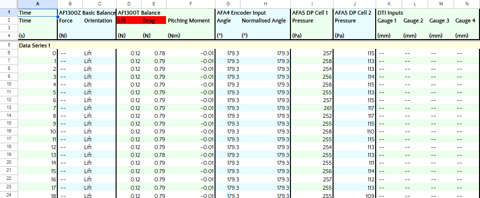
Example of 20 m/s wind at 0° angle of attack Raw Data acquired with Data Acquisition
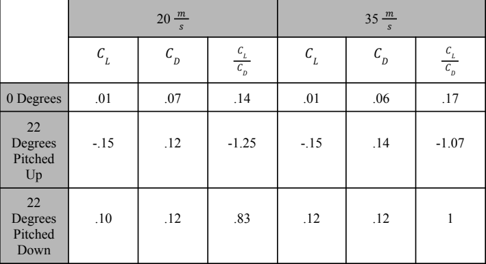
Coefficient Results from Wind Tunnel Testing
| UniSpin Toy
This product development project was aimed at creating a gadget that enriched the lives of the elderly in some way. Our group decided to create a toy that improves concentration, motor skills, and dexterity for the elderly.
| Project Description
Managed a dedicated team of four individuals in the conceptualization, design, and manufacturing of an innovative toy tailored for the elderly demographic, specifically addressing challenges related to loss of dexterity. Leadership responsibilities included scheduling team design meetings and allocating tasks based on individual expertise in 3D modeling, sketching, and manufacturing. In addition, I completed an Additive Manufacturing certificate to gain access to my university's fabrication center.
The project commenced with the creation of 40 sketches and the development of a 3D model, ultimately selecting the final design through a comprehensive decision matrix considering quality, ergonomics, aesthetics, and affordability. In addition, we utilized the predicted bill of materials for different designs as a factor in our decision-making.
The toy was designed to mimic the dynamics of a double pendulum, introducing an element of controlled unpredictability. The device's interactive nature challenges users to engage in coordinated movements, promoting enhanced motor skills, concentration, and cognitive engagement. The final product emerged from a meticulous Additive Manufacturing process, exclusively utilizing fused deposition modeling to ensure a balance between cost-effectiveness and weight management.
This project represents a holistic approach to product development, emphasizing not only the technical aspects of design and manufacturing but also the profound impact on the end user – in this case, the elderly. The toy serves as a testament to the team's commitment to creating purposeful and enriching solutions that cater to the unique needs of the target demographic.
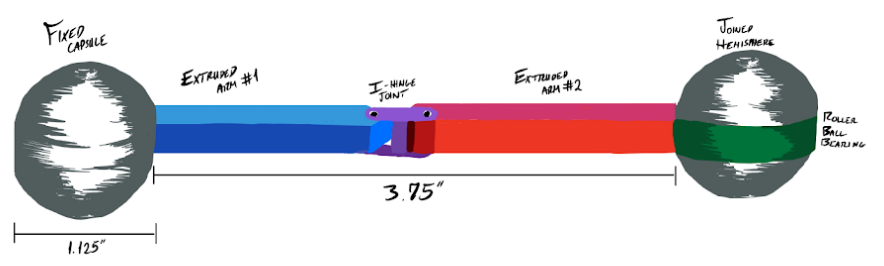
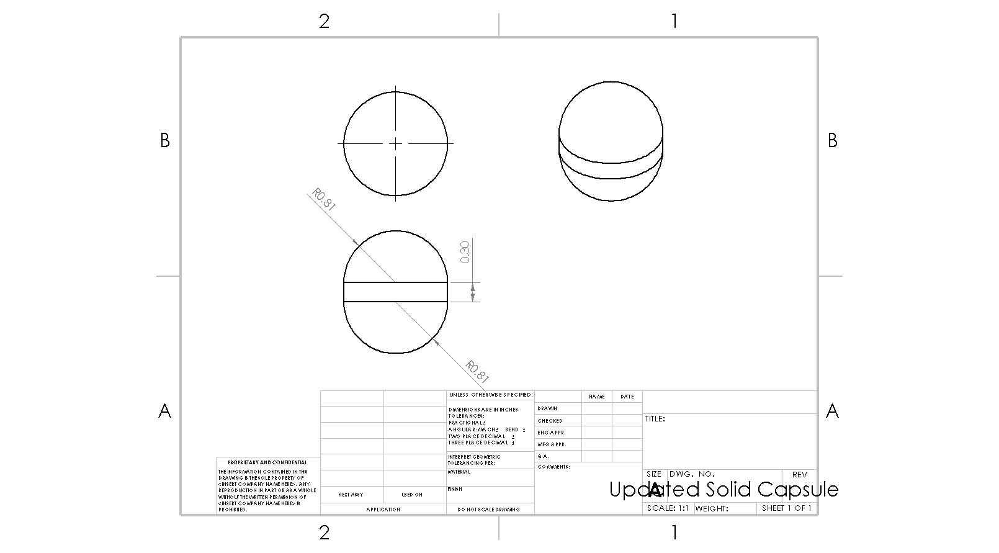
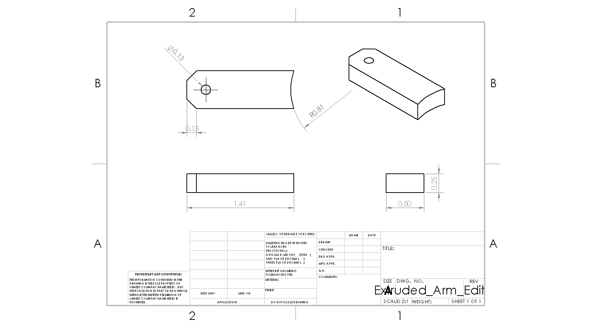
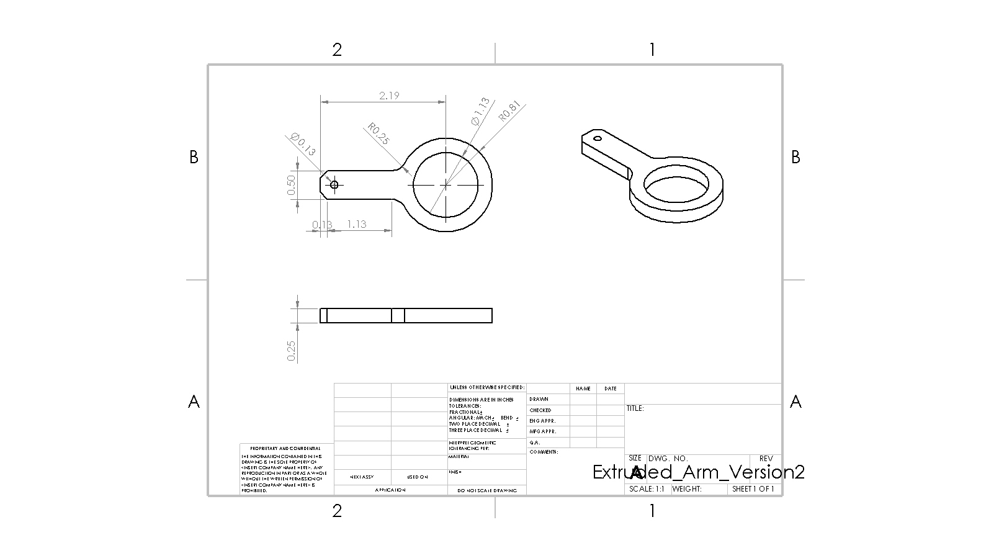
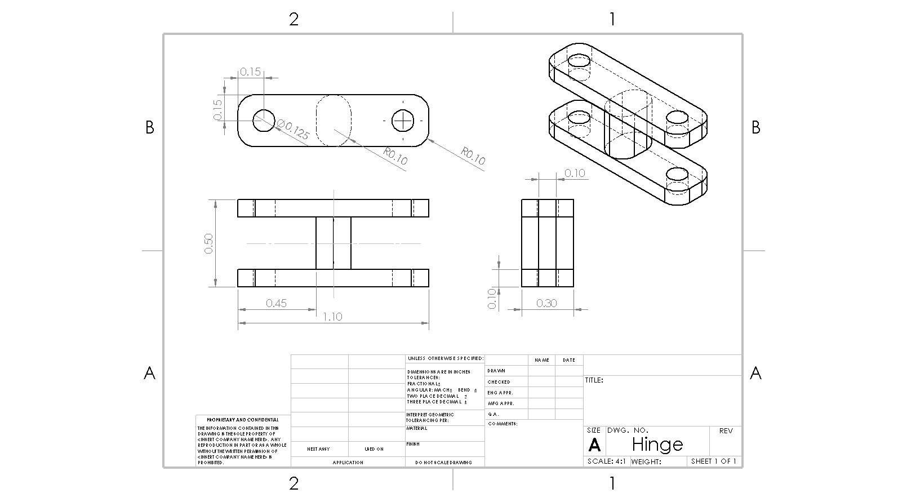
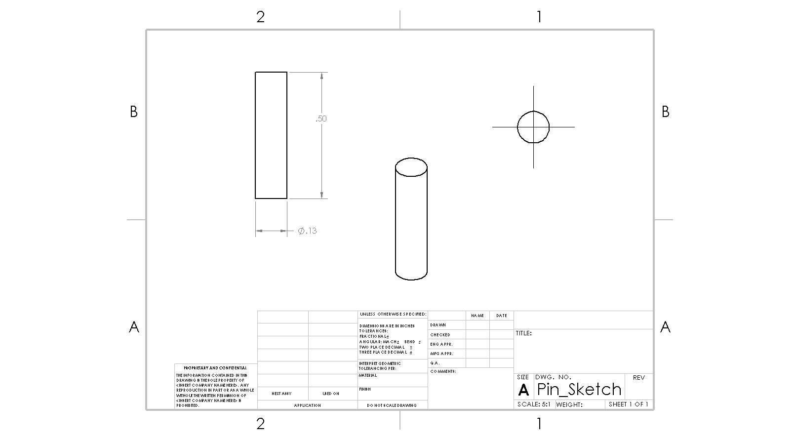
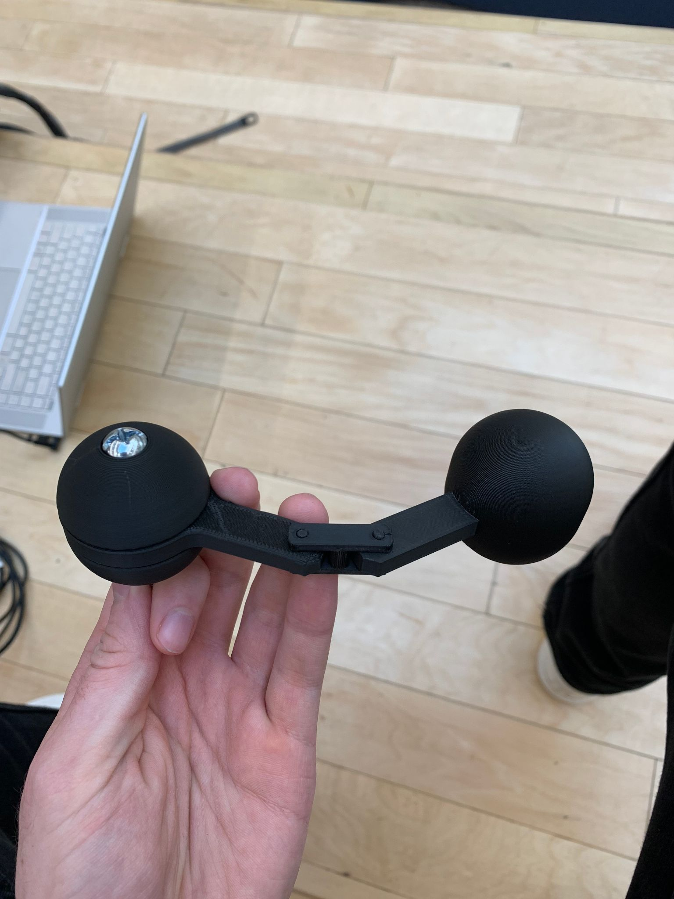
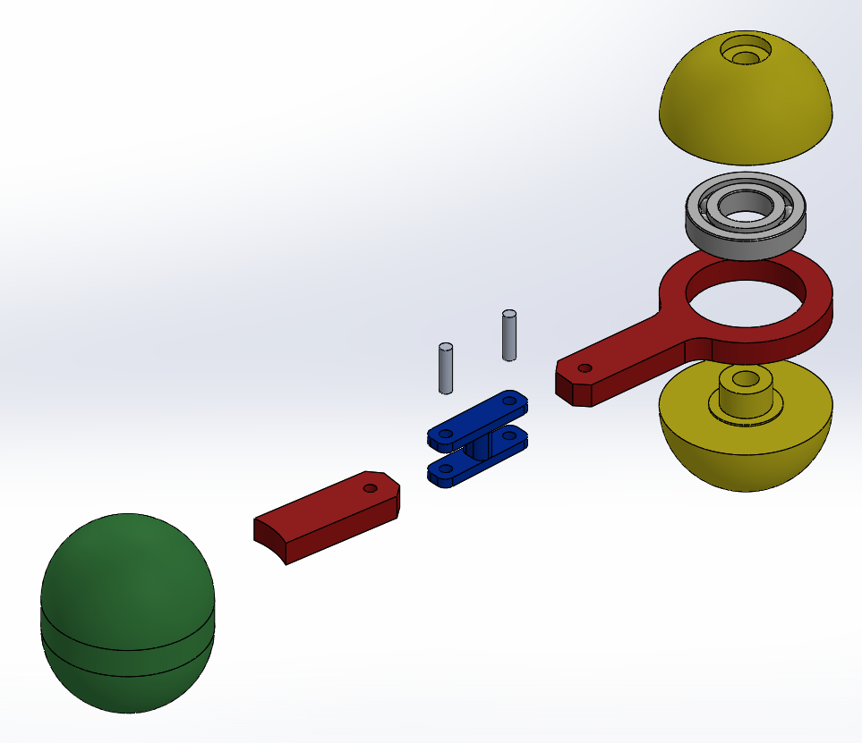
TL;DR – Led the design, build, and hazardous wind tunnel validation of an airfoil-inspired prototype, developing hands-on, systems-level skills in test planning, real-time operations, troubleshooting, and cross-functional teamwork—directly supporting advanced aerospace vehicle testing requirements.